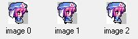
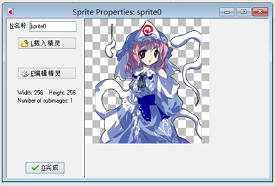
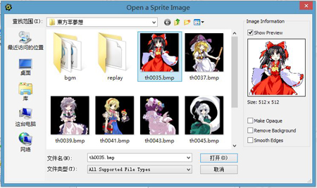

当你制作游戏时，通常会先找一些漂亮的素材，Game Maker捆绑了相当多的华丽的精灵，你还可以在Game Maker的官网上下载其他类型的精灵，许多精灵都能在网络上找到，通常为PNG或者GIF格式。
点击资源菜单中的创建选项或者工具栏的按钮来添加精灵图象，随后会弹出下面的窗口。

在左上角会显示精灵的名称，所有的精灵（和其他资源）都有一个名字，最好给每个精灵一个好记的名字，并且不能重名，虽然没有严格的要求，但我们强烈建议您在命名时仅使用字母和数字和下划线符号，并以字母开头，特别要注意的是不能使用空格，这对日后使用代码编写游戏来说十分重要
点击载入精灵来载入精灵，这时会弹出一个窗口：

左边的部分看起来像标准的文件选择器，你可以选择你想要的精灵，在右边你会看到预览动画和一些相关信息，你可以选择是否使精灵不透明（即，删除任何透明的部分），是否去除背景色使其透明（默认），是否平滑边缘以提高精灵美观度。直到你觉得满意以后，按打开载入精灵。
Game Maker 可以载入许多不同类型的图像文件，当你加载一个gif文件时，这个gif的所有帧将会组成一个精灵。当文件名称以_stripXX结尾，并且XX是一个数字，就会被认为是由XX个子图像连接而成的长带图（不能是gif）。例如，名称为ball_strip4.png的一个图像文件就会被认为包含了4个子图像。
一旦精灵载入了子图像，第一个子图像就会显示在右边，当有多个子图像时，你可以点击箭头按钮逐个查看子图。
点击按钮编辑精灵可以对精灵进行修改，甚至创建出一个全新的精灵，Game Maker有一个内置的精灵图像编辑器，如果你想要深入了解，请参阅编辑精灵和编辑图像.